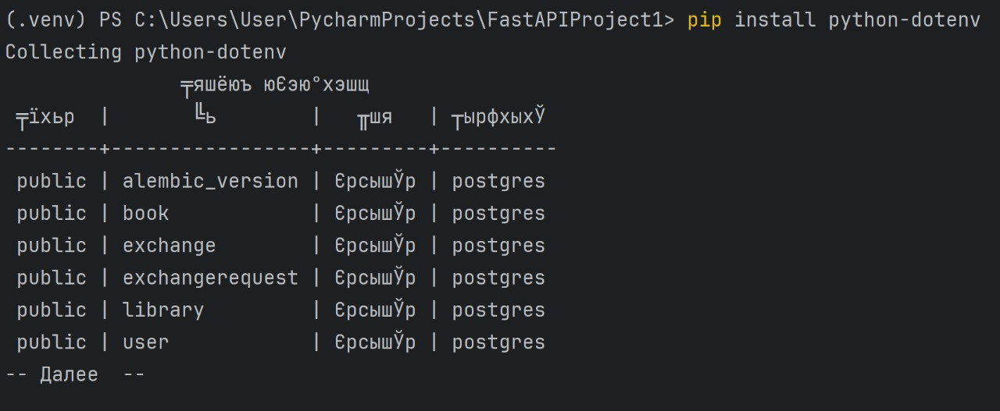
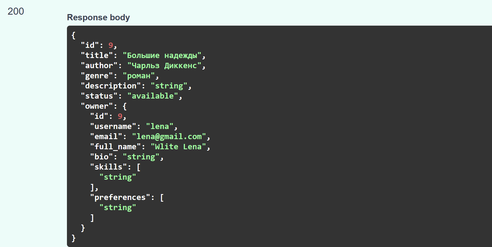

Настройка БД, SQLModel и миграции через Alembic
Пошагово реализовать подключение к БД, АПИ и модели, на основании своего варианта основываясь на действиях в практике
Файл с подключением к БД.
load_dotenv()
db_url = os.getenv('DB_ADMIN')
engine = create_engine(db_url, echo=True)
def init_db():
try:
SQLModel.metadata.create_all(engine)
print("Database tables created successfully")
except Exception as e:
print(f"Error creating database tables: {e}")
raise
def get_session():
with Session(engine) as session:
yield session
Реализованная БД, где в качестве наследника класс SQLModel.
class User(SQLModel, table=True):
id: Optional[int] = Field(default=None, primary_key=True)
username: str
email: str
password: str
full_name: str
bio: Optional[str] = None
skills: Optional[List[str]] = Field(default=[], sa_column=Column(JSON))
preferences: Optional[List[str]] = Field(default=[], sa_column=Column(JSON))
books: List["Book"] = Relationship(back_populates="owner", sa_relationship_kwargs={"cascade": "all, delete"})
library: List["Library"] = Relationship(back_populates="user", sa_relationship_kwargs={"cascade": "all, delete"})
class Book(SQLModel, table=True):
id: Optional[int] = Field(default=None, primary_key=True)
title: str
author: str
genre: str
description: str
status: BookStatus
owner: Optional["User"] = Relationship(back_populates="books", sa_relationship_kwargs={"cascade": "all, delete"})
libraries: List["Library"] = Relationship(back_populates="book", sa_relationship_kwargs={"cascade": "all, delete"})
class Exchange(SQLModel, table=True):
id: Optional[int] = Field(default=None, primary_key=True)
request_id: int = Field(foreign_key="exchangerequest.id")
book_id: int = Field(foreign_key="book.id")
role: ExchangeRole
class ExchangeRequest(SQLModel, table=True):
id: Optional[int] = Field(default=None, primary_key=True)
sender_id: int = Field(foreign_key="user.id")
receiver_id: int = Field(foreign_key="user.id")
status: str
created_at: datetime = Field(default_factory=datetime.utcnow)
class Library(SQLModel, table=True):
library_id: Optional[int] = Field(default=None, primary_key=True)
user_id: int = Field(foreign_key="user.id")
book_id: int = Field(foreign_key="book.id")
user: Optional["User"] = Relationship(back_populates="library", sa_relationship_kwargs={"cascade": "all, delete"})
book: Optional["Book"] = Relationship(back_populates="libraries", sa_relationship_kwargs={"cascade": "all, delete"})
class BookStatus(str, Enum):
available = "available"
exchanged = "exchanged"
class ExchangeRole(str, Enum):
sender = "sender"
receiver = "receiver"
Проверила наличие всех созданных таблиц.

Использование PATCH вместо PUT@router.patch("/update/{book_id}", response_model=BookInfo)
def update_book(
book_id: int,
book_update: BookUpdate,
request: Request,
session: Session = Depends(get_session)
):
db_book = session.get(Book, book_id)
get_current_user(request)
if not db_book:
raise HTTPException(status_code=404, detail="Book not found")
update_data = book_update.dict(exclude_unset=True)
for field, value in update_data.items():
if value is not None and value != "":
setattr(db_book, field, value)
session.commit()
session.refresh(db_book)
return db_book
Сделать модели и API для many-to-many связей с вложенным отображением
Реализация API-эндроинтов для модели User
router = APIRouter()
security = HTTPBearer()
@router.post("/register")
async def register(user: UserDefault, session: Session = Depends(get_session)):
existing_user = session.exec(select(User).where(User.email == user.email)).first()
if existing_user:
raise HTTPException(status_code=400, detail="Email already registered")
new_user = User(
email=user.email,
password=hash_password(user.password),
username=user.username,
full_name=user.full_name,
bio=user.bio,
skills=user.skills,
preferences=user.preferences
)
session.add(new_user)
session.commit()
return {"message": "User created"}
@router.post("/login")
async def login(data: LoginRequest, session: Session = Depends(get_session)):
user = session.exec(select(User).where(User.email == data.email)).first()
if not user or not verify_password(data.password, user.password):
raise HTTPException(status_code=401, detail="Invalid credentials")
access_token = create_access_token({"sub": str(user.id)})
return {"access_token": access_token, "token_type": "bearer"}
@router.get("/me")
async def get_me(request: Request, session: Session = Depends(get_session)):
payload = get_current_user(request)
user = session.get(User, int(payload["sub"]))
if not user:
raise HTTPException(status_code=404, detail="User not found")
return user
@router.post("/change-password")
async def change_password(
data: PasswordChangeRequest,
request: Request,
session: Session = Depends(get_session)
):
payload = get_current_user(request)
user = session.get(User, int(payload["sub"]))
if not verify_password(data.old_password, user.password):
raise HTTPException(status_code=400, detail="Old password is incorrect")
user.password = hash_password(data.new_password)
session.commit()
return {"message": "Password updated"}
@router.get("/")
async def list_users(request: Request, session: Session = Depends(get_session)):
get_current_user(request)
return session.exec(select(User)).all()
@router.get("/{user_id}")
def user_by_id(user_id: int, session: Session = Depends(get_session)) -> User:
user = session.exec(select(User).where(User.id == user_id)).first()
if not user:
raise HTTPException(status_code=404, detail="User not found")
return user
@router.patch("/update/{user_id}")
def user_update(user_id: int, user: UserUpdate, session: Session = Depends(get_session)) -> User:
db_user = session.get(User, user_id)
if not db_user:
raise HTTPException(status_code=404, detail="User not found")
user_data = user.model_dump(exclude_unset=True)
for key, value in user_data.items():
setattr(db_user, key, value)
session.add(db_user)
session.commit()
session.refresh(db_user)
return db_user
@router.delete("/delete/{user_id}")
def delete_user(user_id: int, session: Session = Depends(get_session)):
user = session.get(User, user_id)
if not user:
raise HTTPException(status_code=404, detail="User not found")
session.delete(user)
session.commit()
return {"message": "User deleted"}
Пример вложенного запроса в Book
@router.post("/create", response_model=BookInfo)
def create_book(book: BookCreate, request: Request, session: Session = Depends(get_session)):
user_data = get_current_user(request)
user_id = int(user_data.get("sub"))
current_user = session.get(User, user_id)
db_book = Book.model_validate(book)
db_book.owner_id = current_user.id
session.add(db_book)
session.commit()
session.refresh(db_book)
full_book = session.exec(
select(Book).where(Book.id == db_book.id).options(selectinload(Book.owner))
).first()
return full_book
Вот так выглядит модель ответа на создание новой книги:
class BookInfo(SQLModel):
id: int
title: str
author: str
genre: str
description: str
status: BookStatus
owner: Optional[UserPublic]
class Book(SQLModel, table=True):
id: Optional[int] = Field(default=None, primary_key=True)
title: str
author: str
genre: str
description: str
status: BookStatus
owner: Optional["User"] = Relationship(back_populates="books", sa_relationship_kwargs={"cascade": "all, delete"})
libraries: List["Library"] = Relationship(back_populates="book", sa_relationship_kwargs={"cascade": "all, delete"})
Аналогичным образом были расписаны модели для Exchange, ExchangeRequest, Library. Пример вложенного запроса.
